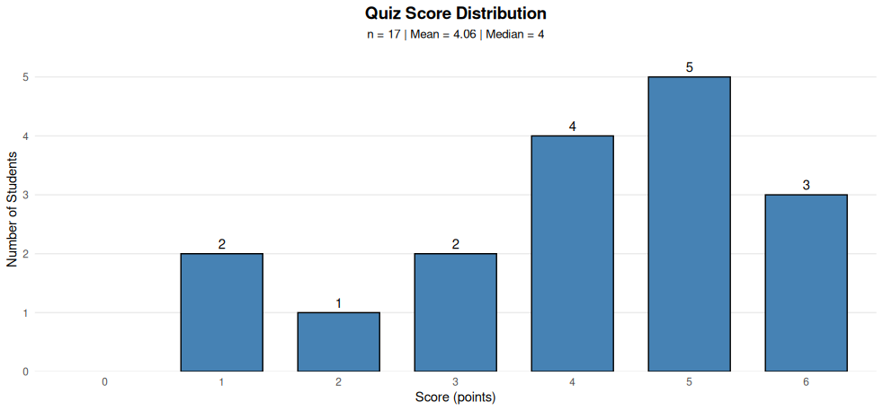
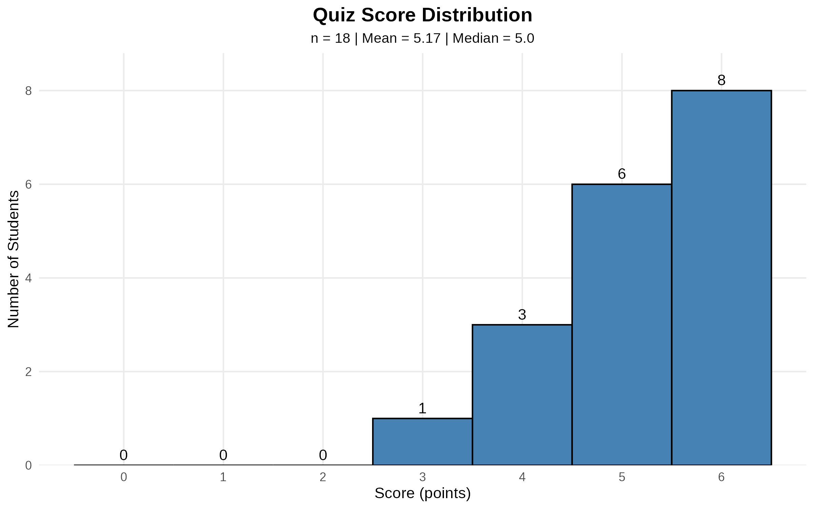

Session 1: Introduction to R & RStudio
Core R fundamentals and data manipulation
Download Session 1 Materials (ZIP)Templates, answer keys, and dataset variations (~56KB)
Topics: Data types, operators, control flow, functions, dates, data frames, data import/export, data manipulation with Base R & Tidyverse, visualization, and statistical analysis. (~220 minutes of content)
Session 1.5: R Fundamentals & Data Generation (Optional)
Building datasets and causal relationships in R
Data generation, filtering, and causal relationship building exercises (~150KB)
+ liveSessionScript_1.R and liveSessionScript_2.R (written during class)
Topics: R and RStudio fundamentals, data generation and simulation, building causal relationships, dataset filtering and subsetting, and exploratory data analysis. This optional session complements Session 1 with practical hands-on exercises in data manipulation and preparation.
🧪 Practice Causal Inference
Interactive exercises to master causal reasoning
Start Interactive Practice4 scenarios with guided questions and explanations
⚠️ Under Construction: This is a new experimental learning tool. Answers to questions are not thoroughly checked yet and some interactive buttons may not be working properly. Feel free to explore and let us know if you like this style of exercises!
Learn: Causal chains (mediators), causal forks (confounders), collider bias, and complex causal structures. Each scenario includes real-world stories, causal graphs, and regression advice. Perfect for building intuition about when to control for variables in your analysis.
Session 2: Matching Methods for Causal Inference
From observational data to causal estimates using matching
Download Session 2 Materials (ZIP)Experiments simulation and matching methods R scripts (~50KB)
Topics: Randomization vs observational studies, confounding and selection bias, propensity score matching, coarsened exact matching, genetic matching, balance assessment (SMD, KS tests, Love plots), standardization, and model dependence. Companion scripts demonstrating how matching addresses the same confounding problems that experiments solve.
Quiz Results

1 person got 1, one person got 1.5, everyone else got 3 out of 3. The graph above represents the result of grading a bit more strictly, showing scores across all 6 questions (max score is 6).
Practice R Fundamentals
125 practice questions to test your R knowledge
Start PracticeInteractive flashcard-style questions with answers and explanations
Topics: Vectors (creation, indexing, operations), logical operations, ifelse() conditionals, data types and coercion, data frames, NA handling, string operations, for loops, combined concepts, and error fixing. Perfect for exam preparation and self-assessment.
Session 2.5: Propensity Score Matching from Scratch
Understanding PSM by building it manually with for loops
Download Session 2.5 Materials (ZIP)R scripts, R Markdown files, and rendered HTML tutorials (~200KB)
Topics: Logistic regression fundamentals (sigmoid function, intercept/slope effects), manual propensity score calculation with for loops, nearest-neighbor matching algorithm implementation, caliper matching, balance assessment (SMD, t-tests, Love plots), treatment effect estimation (naive, regression, matching, doubly robust), statistical significance vs effect size, standardization concepts (z-scores, pooled SD), and why categorical variables cannot be standardized.
Story: "Does Using AI Assistants Boost Your Starting Salary?" — A 2026 scenario examining whether public policy students who use AI tools earn higher starting salaries, with observed confounders (prior experience, quant skills, STEM background) and unobserved confounders (curiosity, tech readiness, AI aversion).
Session 3: Difference-in-Differences
From 2×2 DiD to panel data with two-way fixed effects
Download Session 3 Materials (ZIP)R scripts, R Markdown, rendered HTML, and dataset (~3.3MB)
Topics: Card & Krueger minimum wage study (DiD anatomy, coefficient interpretation, chain composition robustness), parallel trends assumption (visual checks, statistical tests, good vs bad controls), Vienna weapon ban zone simulation, panel data structure, two-way fixed effects (TWFE), degrees of freedom costs, when to use interaction terms vs continuous treatment, and alcohol taxes & traffic fatalities.
Stories: "Did New Jersey's minimum wage increase reduce fast-food employment?" (Card & Krueger 1994), "Do weapon ban zones reduce knife attacks in Vienna?", and "Do higher beer taxes reduce traffic fatalities?" (Ruhm 1996).
Quiz 2 Results

Quiz 2 results show strong performance with a mean score of 5.17 out of 6 points. The majority of students (8 out of 18) achieved a perfect score.
Session 4: Synthetic Control Method
Estimating the economic cost of German reunification
Download Session 4 Materials (ZIP)R Markdown, rendered HTML, R script, dataset, and reference paper (~4MB)
Topics: Synthetic control method (SCM), countries as predictor vectors, Euclidean distance and donor selection, dataprep matrices (X0/X1/Z0/Z1), nested optimization (V for predictor importance, W for country weights), balance assessment, treatment effect estimation, placebo tests (in-time and in-space), RMSPE ratios and pseudo p-values.
Story: "What was the economic cost of German reunification for West Germany?" — Abadie, Diamond & Hainmueller (2015) construct a synthetic West Germany from 16 OECD donor countries to estimate the counterfactual GDP trajectory without reunification.
Session 5: Regression Discontinuity Design
When arbitrary cutoffs create natural experiments
Download Session 5 Materials (ZIP)R Markdown, rendered HTML, reference papers, and datasets (~6MB)
"Find the RDD" — Interactive Quiz18 real research scenarios — identify the running variable, cutoff, treatment, and outcome
Topics: Sharp RDD (simulation, manual lm(), rdrobust), bias-variance tradeoff and bandwidth selection, minimum legal drinking age and mortality (Carpenter & Dobkin 2009), Brazil elections and the incumbency curse (Klašnja & Titiunik 2017), density tests for manipulation (rddensity), covariate balance falsification, sharp vs fuzzy RDD.
Stories: "Does turning 21 kill you?" — Legal drinking access and mortality in the US. "Does winning an election hurt your party?" — The incumbency curse in Brazilian municipal elections.
AI Assistants for R Help
ChatGPT agent and Gemini gem with a prompt tailored to provide concise information about R
The prompt used is available in the Session 2 download package (R_EXPERT_PROMPT.md)
Resources
- 📦 View on GitHub — Browse the full repository
- 👤 Lecturer's Personal Page — Learn more about Can Celebi